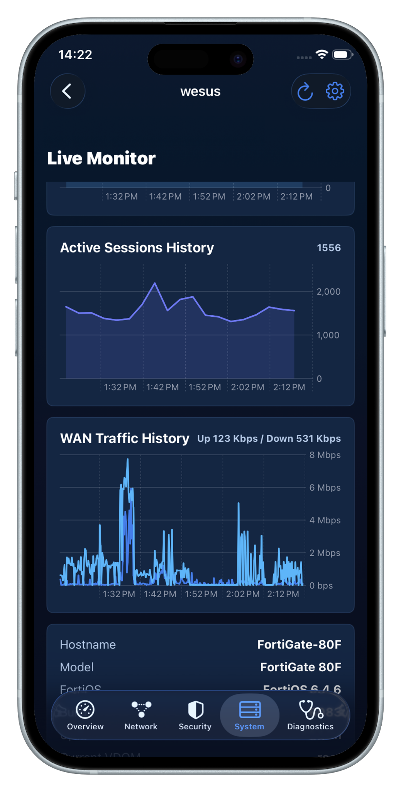
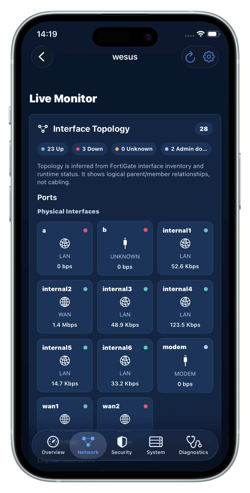
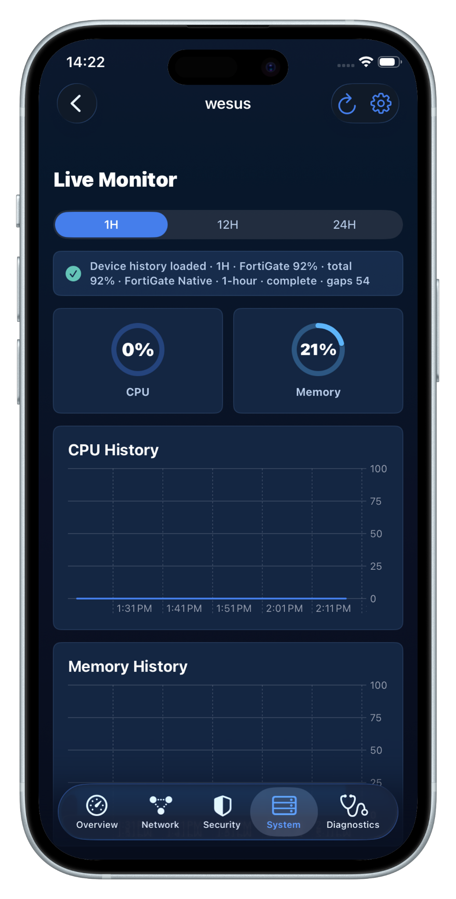
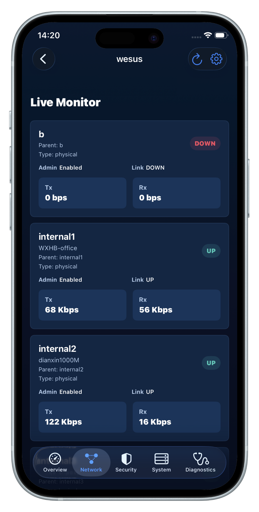

System Health
CPU, memory, sessions, uptime, model, FortiOS version and build.
FortiGate visibility for iPhone and iPad
Monitor system health, interfaces, WAN traffic, sessions, topology, and key operational status directly from your iPhone or iPad.
Built for IT administrators who want fast, practical FortiGate visibility without opening a full management console every time.
Built-in Demo Mode - no FortiGate required to explore the app.

Product overview
NOC for FGT brings the most useful day-to-day FortiGate health and network information into a focused mobile experience.
CPU, memory, sessions, uptime, model, FortiOS version and build.
Interface status, roles, WAN traffic, addressing, and topology-oriented relationships.
FortiGuard-related operational information and security attention signals where supported.
Understand API, endpoint, and connection behavior when troubleshooting.

Monitor what matters
Live network visibility
Quickly understand interface health, WAN activity, and the current operational state of your FortiGate.

Historical trends
Review CPU, memory, active session, and traffic trends to better understand how your FortiGate has been behaving over time.
Historical availability may depend on the FortiGate model, FortiOS version, configuration, and locally collected samples.
Network topology
View FortiGate interface and network relationships in a topology-oriented layout designed for quick operational checks.
Built-in Demo Mode
NOC for FGT includes a built-in Demo Mode so you can explore the monitoring experience without connecting to a physical FortiGate.
Multi-device management
Keep multiple FortiGate devices organized in one mobile workspace and move quickly between environments.
Screenshots
Monitor FortiGate health, traffic, interface relationships, and detailed port status with a mobile-first NOC workflow.

Security & privacy
NOC for FGT connects directly from your iPhone or iPad to the FortiGate you configure.
Direct Device Connection. The app connects to the FortiGate address you configure.
Local Credentials. FortiGate passwords are stored using the iOS Keychain.
App Lock. Optional App Lock can use Face ID, Touch ID, or device passcode to help protect access to saved devices and monitoring data.
No Shared NOC Account. A separate NOC for FGT cloud account is not required for direct device monitoring.
Backup Safety. Backup exports do not include passwords, OTP codes, session cookies, CSRF tokens, or other authentication secrets.
2FA. FortiToken / OTP-based two-factor authentication is supported when enabled on the FortiGate account.
How it works
Enter IP or hostname, HTTPS management port, username, and password.
Use FortiGate login. If enabled on the device account, complete FortiToken / OTP authentication.
Review system health, network state, security status, diagnostics, and historical trends.
Compatibility
iPhone and iPad.
HTTPS management, username / password, and FortiToken / OTP 2FA.
Validated with FortiOS 6.2.16, 6.2.17, 6.4.6, 7.2.8 and 7.6.6. Capability detection and adaptive API handling help support multiple FortiOS generations.
FAQ
No. The app includes a built-in Demo Mode that lets you explore the main monitoring experience without connecting to a physical FortiGate.
No separate NOC for FGT cloud account is required for direct device monitoring.
FortiGate passwords are stored locally using the iOS Keychain.
Yes. Optional App Lock can use Face ID, Touch ID, or device passcode to help protect access to saved devices and monitoring data when enabled.
Yes. FortiToken / OTP-based authentication is supported when 2FA is enabled on the FortiGate account.
Yes. NOC for FGT supports managing multiple configured FortiGate devices from the app.
The app supports historical views for key operational metrics such as CPU, memory, sessions, and traffic. Available history can depend on the FortiGate environment and locally collected data.
It depends on how your FortiGate management interface is exposed. NOC for FGT connects to the address you configure. Users are responsible for using an appropriate and secure network path to their own FortiGate.
No. NOC for FGT is an independent application and is not affiliated with, endorsed by, or sponsored by Fortinet, Inc.
NOC for FGT
A focused mobile NOC experience for everyday FortiGate monitoring.
OpsHome product family
Explore other focused tools for network, infrastructure, domain, certificate, and connectivity visibility.